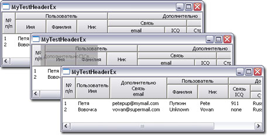

Extended Header Control
Предлагаю вам наворот для хедера. Любой программист наверное знает, что это за контрол. С его помощью перетаскиваешь колонки, сортируешь, растягиваешь и т.д. и т.п.На ваше обозрение выставляется законченный модуль, позволяющий отображать стандартный элемент Header в многострочном виде, плюс объединяет одинаковые соседние элементы в один.
В модуль входят файлы, расположенные в папке HeaderEx демонстрашки:
- HeaderEx.срр - сам модуль
- HeaderEx.h - заголовочный файл с объявленными функциями
Коротко о себе и создании этого контрола:
Я под Windows программирую всего 4й год, а общий "стаж" 15 лет. Разрабатывал свои контролы, наворачивал имеющиеся... Работал, есстественно, и с хеадер контролом... Да, он крутой - возможность позиционирования на родителе, встроенный перерасчет клиентской области предка, изменение порядка столбцов, их ширина... В общем всё при нем.
Но, все-таки много в нем текста не попишешь. А если работаешь с бухгалтерией или еще с чем - где каждая циферка что-то значит, а сокращения в ее описании не приемлемы человеческим фактором. Результат - появился такой вот контролл.

Для использования имеющихся "наворотов" необходимо в проекте подключить заголовочные файлы commctrl.h, HeaderEx.h, а также HeaderEx.срр и, наконец, соответствующую библиотеку comctl32.lib.
Т.к. модуль расширяет возможности имеющегося элемента, необходимо инициализировать сам элемент вызовом функции InitCommonControls(). Затем для уже созданного элемента Header вызывается функция InitHeaderEx (или InitListViewEx для ListViewControl).
Элемент готов к отображению данных. Далее, как обычно, добавляем в него колонки. Место, где желаете указать перевод строки, вводите символ '\n', заметьте, не полное его сочетание. Хедер при отображении осуществляет поиск этих символов для объединения шапочек соседних колонок.
Хедер позволяет перетаскивать колонки, в результате чего разрываются и заново слепляются строки заголовков динамически, не теряя внешнего вида и читабельности.
Скачать демонстрационные проекты для VS.NET 2002 и VS 6.0 api_header_ex.zip
Copyright (C) 2003 BOBKA ltd
Типа использование легально, только скажите ПАСИБА. Можно вслух :о)
Приятной разработки программ с удобным интерфейсом.
С уважением BOBKA.